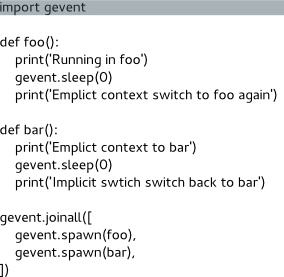

gevent是一个基于libev的并发库。它为各种并发和网络相关的任务提供了整洁的API。
本指南假定读者有中级Python水平，但不要求有其它更多的知识，不期待读者有 并发方面的知识。本指南的目标在于给予你需要的工具来开始使用gevent，帮助你 驯服现有的并发问题，并从今开始编写异步应用程序。
按提供贡献的时间先后顺序列出如下: Stephen Diehl Jérémy Bethmont sww Bruno Bigras David Ripton Travis Cline Boris Feld youngsterxyf Eddie Hebert Alexis Metaireau Daniel Velkov
同时感谢Denis Bilenko写了gevent和相应的指导以形成本指南。
这是一个以MIT许可证发布的协作文档。你想添加一些内容？或看见一个排版错误？ Fork一个分支发布一个request到 Github. 我们欢迎任何贡献。
本页也有日文版本。
在gevent中用到的主要模式是Greenlet, 它是以C扩展模块形式接入Python的轻量级协程。 Greenlet全部运行在主程序操作系统进程的内部，但它们被协作式地调度。
在任何时刻，只有一个协程在运行。
这与multiprocessing或threading等提供真正并行构造的库是不同的。
这些库轮转使用操作系统调度的进程和线程，是真正的并行。
并发的核心思想在于，大的任务可以分解成一系列的子任务，后者可以被调度成 同时执行或异步执行，而不是一次一个地或者同步地执行。两个子任务之间的 切换也就是上下文切换。
在gevent里面，上下文切换是通过yielding来完成的. 在下面的例子里，
我们有两个上下文，通过调用gevent.sleep(0)，它们各自yield向对方。
import gevent
def foo():
print('Running in foo')
gevent.sleep(0)
print('Explicit context switch to foo again')
def bar():
print('Explicit context to bar')
gevent.sleep(0)
print('Implicit context switch back to bar')
gevent.joinall([
gevent.spawn(foo),
gevent.spawn(bar),
])
Running in foo
Explicit context to bar
Explicit context switch to foo again
Implicit context switch back to bar
下图将控制流形象化，就像在调试器中单步执行整个程序，以说明上下文切换如何发生。

当我们在受限于网络或IO的函数中使用gevent，这些函数会被协作式的调度， gevent的真正能力会得到发挥。Gevent处理了所有的细节， 来保证你的网络库会在可能的时候，隐式交出greenlet上下文的执行权。 这样的一种用法是如何强大，怎么强调都不为过。或者我们举些例子来详述。
下面例子中的select()函数通常是一个在各种文件描述符上轮询的阻塞调用。
import time
import gevent
from gevent import select
start = time.time()
tic = lambda: 'at %1.1f seconds' % (time.time() - start)
def gr1():
# Busy waits for a second, but we don't want to stick around...
print('Started Polling: %s' % tic())
select.select([], [], [], 2)
print('Ended Polling: %s' % tic())
def gr2():
# Busy waits for a second, but we don't want to stick around...
print('Started Polling: %s' % tic())
select.select([], [], [], 2)
print('Ended Polling: %s' % tic())
def gr3():
print("Hey lets do some stuff while the greenlets poll, %s" % tic())
gevent.sleep(1)
gevent.joinall([
gevent.spawn(gr1),
gevent.spawn(gr2),
gevent.spawn(gr3),
])
Started Polling: at 0.0 seconds
Started Polling: at 0.0 seconds
Hey lets do some stuff while the greenlets poll, at 0.0 seconds
Ended Polling: at 2.0 seconds
Ended Polling: at 2.0 seconds
下面是另外一个多少有点人造色彩的例子，定义一个非确定性的(non-deterministic)
的task函数(给定相同输入的情况下，它的输出不保证相同)。
此例中执行这个函数的副作用就是，每次task在它的执行过程中都会随机地停某些秒。
import gevent
import random
def task(pid):
"""
Some non-deterministic task
"""
gevent.sleep(random.randint(0,2)*0.001)
print('Task %s done' % pid)
def synchronous():
for i in range(1,10):
task(i)
def asynchronous():
threads = [gevent.spawn(task, i) for i in xrange(10)]
gevent.joinall(threads)
print('Synchronous:')
synchronous()
print('Asynchronous:')
asynchronous()
Synchronous:
Task 1 done
Task 2 done
Task 3 done
Task 4 done
Task 5 done
Task 6 done
Task 7 done
Task 8 done
Task 9 done
Asynchronous:
Task 3 done
Task 7 done
Task 9 done
Task 2 done
Task 4 done
Task 1 done
Task 8 done
Task 6 done
Task 0 done
Task 5 done
上例中，在同步的部分，所有的task都同步的执行， 结果当每个task在执行时主流程被阻塞(主流程的执行暂时停住)。
程序的重要部分是将task函数封装到Greenlet内部线程的gevent.spawn。
初始化的greenlet列表存放在数组threads中，此数组被传给gevent.joinall
函数，后者阻塞当前流程，并执行所有给定的greenlet。执行流程只会在
所有greenlet执行完后才会继续向下走。
要重点留意的是，异步的部分本质上是随机的，而且异步部分的整体运行时间比同步 要大大减少。事实上，同步部分的最大运行时间，即是每个task停0.002秒，结果整个 队列要停0.02秒。而异步部分的最大运行时间大致为0.002秒，因为没有任何一个task会 阻塞其它task的执行。
一个更常见的应用场景，如异步地向服务器取数据，取数据操作的执行时间 依赖于发起取数据请求时远端服务器的负载，各个请求的执行时间会有差别。
import gevent.monkey
gevent.monkey.patch_socket()
import gevent
import urllib2
import simplejson as json
def fetch(pid):
response = urllib2.urlopen('http://json-time.appspot.com/time.json')
result = response.read()
json_result = json.loads(result)
datetime = json_result['datetime']
print('Process %s: %s' % (pid, datetime))
return json_result['datetime']
def synchronous():
for i in range(1,10):
fetch(i)
def asynchronous():
threads = []
for i in range(1,10):
threads.append(gevent.spawn(fetch, i))
gevent.joinall(threads)
print('Synchronous:')
synchronous()
print('Asynchronous:')
asynchronous()
就像之前所提到的，greenlet具有确定性。在相同配置相同输入的情况下，它们总是 会产生相同的输出。下面就有例子，我们在multiprocessing的pool之间执行一系列的 任务，与在gevent的pool之间执行作比较。
import time
def echo(i):
time.sleep(0.001)
return i
# Non Deterministic Process Pool
from multiprocessing.pool import Pool
p = Pool(10)
run1 = [a for a in p.imap_unordered(echo, xrange(10))]
run2 = [a for a in p.imap_unordered(echo, xrange(10))]
run3 = [a for a in p.imap_unordered(echo, xrange(10))]
run4 = [a for a in p.imap_unordered(echo, xrange(10))]
print(run1 == run2 == run3 == run4)
# Deterministic Gevent Pool
from gevent.pool import Pool
p = Pool(10)
run1 = [a for a in p.imap_unordered(echo, xrange(10))]
run2 = [a for a in p.imap_unordered(echo, xrange(10))]
run3 = [a for a in p.imap_unordered(echo, xrange(10))]
run4 = [a for a in p.imap_unordered(echo, xrange(10))]
print(run1 == run2 == run3 == run4)
False
True
即使gevent通常带有确定性，当开始与如socket或文件等外部服务交互时， 不确定性也可能溜进你的程序中。因此尽管gevent线程是一种“确定的并发”形式， 使用它仍然可能会遇到像使用POSIX线程或进程时遇到的那些问题。
涉及并发长期存在的问题就是竞争条件(race condition)。简单来说， 当两个并发线程/进程都依赖于某个共享资源同时都尝试去修改它的时候， 就会出现竞争条件。这会导致资源修改的结果状态依赖于时间和执行顺序。 这是个问题，我们一般会做很多努力尝试避免竞争条件， 因为它会导致整个程序行为变得不确定。
最好的办法是始终避免所有全局的状态。全局状态和导入时(import-time)副作用总是会 反咬你一口！
gevent对Greenlet初始化提供了一些封装，最常用的使用模板之一有
import gevent
from gevent import Greenlet
def foo(message, n):
"""
Each thread will be passed the message, and n arguments
in its initialization.
"""
gevent.sleep(n)
print(message)
# Initialize a new Greenlet instance running the named function
# foo
thread1 = Greenlet.spawn(foo, "Hello", 1)
# Wrapper for creating and running a new Greenlet from the named
# function foo, with the passed arguments
thread2 = gevent.spawn(foo, "I live!", 2)
# Lambda expressions
thread3 = gevent.spawn(lambda x: (x+1), 2)
threads = [thread1, thread2, thread3]
# Block until all threads complete.
gevent.joinall(threads)
Hello
I live!
除使用基本的Greenlet类之外，你也可以子类化Greenlet类，重载它的_run方法。
import gevent
from gevent import Greenlet
class MyGreenlet(Greenlet):
def __init__(self, message, n):
Greenlet.__init__(self)
self.message = message
self.n = n
def _run(self):
print(self.message)
gevent.sleep(self.n)
g = MyGreenlet("Hi there!", 3)
g.start()
g.join()
Hi there!
就像任何其他成段代码，Greenlet也可能以不同的方式运行失败。 Greenlet可能未能成功抛出异常，不能停止运行，或消耗了太多的系统资源。
一个greenlet的状态通常是一个依赖于时间的参数。在greenlet中有一些标志， 让你可以监视它的线程内部状态：
started -- Boolean, 指示此Greenlet是否已经启动ready() -- Boolean, 指示此Greenlet是否已经停止successful() -- Boolean, 指示此Greenlet是否已经停止而且没抛异常value -- 任意值, 此Greenlet代码返回的值exception -- 异常, 此Greenlet内抛出的未捕获异常
import gevent
def win():
return 'You win!'
def fail():
raise Exception('You fail at failing.')
winner = gevent.spawn(win)
loser = gevent.spawn(fail)
print(winner.started) # True
print(loser.started) # True
# Exceptions raised in the Greenlet, stay inside the Greenlet.
try:
gevent.joinall([winner, loser])
except Exception as e:
print('This will never be reached')
print(winner.value) # 'You win!'
print(loser.value) # None
print(winner.ready()) # True
print(loser.ready()) # True
print(winner.successful()) # True
print(loser.successful()) # False
# The exception raised in fail, will not propogate outside the
# greenlet. A stack trace will be printed to stdout but it
# will not unwind the stack of the parent.
print(loser.exception)
# It is possible though to raise the exception again outside
# raise loser.exception
# or with
# loser.get()
True
True
You win!
None
True
True
True
False
You fail at failing.
当主程序(main program)收到一个SIGQUIT信号时，不能成功做yield操作的 Greenlet可能会令意外地挂起程序的执行。这导致了所谓的僵尸进程， 它需要在Python解释器之外被kill掉。
对此，一个通用的处理模式就是在主程序中监听SIGQUIT信号，在程序退出
调用gevent.shutdown。
import gevent
import signal
def run_forever():
gevent.sleep(1000)
if __name__ == '__main__':
gevent.signal(signal.SIGQUIT, gevent.shutdown)
thread = gevent.spawn(run_forever)
thread.join()
超时是一种对一块代码或一个Greenlet的运行时间的约束。
import gevent
from gevent import Timeout
seconds = 10
timeout = Timeout(seconds)
timeout.start()
def wait():
gevent.sleep(10)
try:
gevent.spawn(wait).join()
except Timeout:
print('Could not complete')
超时类也可以用在上下文管理器(context manager)中, 也就是with语句内。
import gevent
from gevent import Timeout
time_to_wait = 5 # seconds
class TooLong(Exception):
pass
with Timeout(time_to_wait, TooLong):
gevent.sleep(10)
另外，对各种Greenlet和数据结构相关的调用，gevent也提供了超时参数。 例如：
import gevent
from gevent import Timeout
def wait():
gevent.sleep(2)
timer = Timeout(1).start()
thread1 = gevent.spawn(wait)
try:
thread1.join(timeout=timer)
except Timeout:
print('Thread 1 timed out')
# --
timer = Timeout.start_new(1)
thread2 = gevent.spawn(wait)
try:
thread2.get(timeout=timer)
except Timeout:
print('Thread 2 timed out')
# --
try:
gevent.with_timeout(1, wait)
except Timeout:
print('Thread 3 timed out')
Thread 1 timed out
Thread 2 timed out
Thread 3 timed out
我们现在来到gevent的死角了. 在此之前，我已经避免提到猴子补丁(monkey patching)
以尝试使gevent这个强大的协程模型变得生动有趣，但现在到了讨论猴子补丁的黑色艺术
的时候了。你之前可能注意到我们提到了monkey.patch_socket()这个命令，这个
纯粹副作用命令是用来改变标准socket库的。
import socket
print(socket.socket)
print("After monkey patch")
from gevent import monkey
monkey.patch_socket()
print(socket.socket)
import select
print(select.select)
monkey.patch_select()
print("After monkey patch")
print(select.select)
class 'socket.socket'
After monkey patch
class 'gevent.socket.socket'
built-in function select
After monkey patch
function select at 0x1924de8
Python的运行环境允许我们在运行时修改大部分的对象，包括模块，类甚至函数。
这是个一般说来令人惊奇的坏主意，因为它创造了“隐式的副作用”，如果出现问题
它很多时候是极难调试的。虽然如此，在极端情况下当一个库需要修改Python本身
的基础行为的时候，猴子补丁就派上用场了。在这种情况下，gevent能够
修改标准库里面大部分的阻塞式系统调用，包括socket、ssl、threading和
select等模块，而变为协作式运行。
例如，Redis的python绑定一般使用常规的tcp socket来与redis-server实例通信。
通过简单地调用gevent.monkey.patch_all()，可以使得redis的绑定协作式的调度
请求，与gevent栈的其它部分一起工作。
这让我们可以将一般不能与gevent共同工作的库结合起来，而不用写哪怕一行代码。 虽然猴子补丁仍然是邪恶的(evil)，但在这种情况下它是“有用的邪恶(useful evil)”。
事件(event)是一个在Greenlet之间异步通信的形式。
import gevent
from gevent.event import Event
'''
Illustrates the use of events
'''
evt = Event()
def setter():
'''After 3 seconds, wake all threads waiting on the value of evt'''
print('A: Hey wait for me, I have to do something')
gevent.sleep(3)
print("Ok, I'm done")
evt.set()
def waiter():
'''After 3 seconds the get call will unblock'''
print("I'll wait for you")
evt.wait() # blocking
print("It's about time")
def main():
gevent.joinall([
gevent.spawn(setter),
gevent.spawn(waiter),
gevent.spawn(waiter),
gevent.spawn(waiter),
gevent.spawn(waiter),
gevent.spawn(waiter)
])
if __name__ == '__main__': main()
事件对象的一个扩展是AsyncResult，它允许你在唤醒调用上附加一个值。 它有时也被称作是future或defered，因为它持有一个指向将来任意时间可设置 为任何值的引用。
import gevent
from gevent.event import AsyncResult
a = AsyncResult()
def setter():
"""
After 3 seconds set the result of a.
"""
gevent.sleep(3)
a.set('Hello!')
def waiter():
"""
After 3 seconds the get call will unblock after the setter
puts a value into the AsyncResult.
"""
print(a.get())
gevent.joinall([
gevent.spawn(setter),
gevent.spawn(waiter),
])
队列是一个排序的数据集合，它有常见的put / get操作，
但是它是以在Greenlet之间可以安全操作的方式来实现的。
举例来说，如果一个Greenlet从队列中取出一项，此项就不会被 同时执行的其它Greenlet再取到了。
import gevent
from gevent.queue import Queue
tasks = Queue()
def worker(n):
while not tasks.empty():
task = tasks.get()
print('Worker %s got task %s' % (n, task))
gevent.sleep(0)
print('Quitting time!')
def boss():
for i in xrange(1,25):
tasks.put_nowait(i)
gevent.spawn(boss).join()
gevent.joinall([
gevent.spawn(worker, 'steve'),
gevent.spawn(worker, 'john'),
gevent.spawn(worker, 'nancy'),
])
Worker steve got task 1
Worker john got task 2
Worker nancy got task 3
Worker steve got task 4
Worker nancy got task 5
Worker john got task 6
Worker steve got task 7
Worker john got task 8
Worker nancy got task 9
Worker steve got task 10
Worker nancy got task 11
Worker john got task 12
Worker steve got task 13
Worker john got task 14
Worker nancy got task 15
Worker steve got task 16
Worker nancy got task 17
Worker john got task 18
Worker steve got task 19
Worker john got task 20
Worker nancy got task 21
Worker steve got task 22
Worker nancy got task 23
Worker john got task 24
Quitting time!
Quitting time!
Quitting time!
如果需要，队列也可以阻塞在put或get操作上。
put和get操作都有非阻塞的版本，put_nowait和get_nowait不会阻塞，
然而在操作不能完成时抛出gevent.queue.Empty或gevent.queue.Full异常。
在下面例子中，我们让boss与多个worker同时运行，并限制了queue不能放入多于3个元素。
这个限制意味着，直到queue有空余空间之间，put操作会被阻塞。相反地，如果队列中
没有元素，get操作会被阻塞。它同时带一个timeout参数，允许在超时时间内如果
队列没有元素无法完成操作就抛出gevent.queue.Empty异常。
import gevent
from gevent.queue import Queue, Empty
tasks = Queue(maxsize=3)
def worker(n):
try:
while True:
task = tasks.get(timeout=1) # decrements queue size by 1
print('Worker %s got task %s' % (n, task))
gevent.sleep(0)
except Empty:
print('Quitting time!')
def boss():
"""
Boss will wait to hand out work until a individual worker is
free since the maxsize of the task queue is 3.
"""
for i in xrange(1,10):
tasks.put(i)
print('Assigned all work in iteration 1')
for i in xrange(10,20):
tasks.put(i)
print('Assigned all work in iteration 2')
gevent.joinall([
gevent.spawn(boss),
gevent.spawn(worker, 'steve'),
gevent.spawn(worker, 'john'),
gevent.spawn(worker, 'bob'),
])
Worker steve got task 1
Worker john got task 2
Worker bob got task 3
Worker steve got task 4
Worker bob got task 5
Worker john got task 6
Assigned all work in iteration 1
Worker steve got task 7
Worker john got task 8
Worker bob got task 9
Worker steve got task 10
Worker bob got task 11
Worker john got task 12
Worker steve got task 13
Worker john got task 14
Worker bob got task 15
Worker steve got task 16
Worker bob got task 17
Worker john got task 18
Assigned all work in iteration 2
Worker steve got task 19
Quitting time!
Quitting time!
Quitting time!
组(group)是一个运行中greenlet的集合，集合中的greenlet像一个组一样
会被共同管理和调度。 它也兼饰了像Python的multiprocessing库那样的
平行调度器的角色。
import gevent
from gevent.pool import Group
def talk(msg):
for i in xrange(3):
print(msg)
g1 = gevent.spawn(talk, 'bar')
g2 = gevent.spawn(talk, 'foo')
g3 = gevent.spawn(talk, 'fizz')
group = Group()
group.add(g1)
group.add(g2)
group.join()
group.add(g3)
group.join()
bar
bar
bar
foo
foo
foo
fizz
fizz
fizz
在管理异步任务的分组上它是非常有用的。
就像上面所说，Group也以不同的方式为分组greenlet/分发工作和收集它们的结果也提供了API。
import gevent
from gevent import getcurrent
from gevent.pool import Group
group = Group()
def hello_from(n):
print('Size of group %s' % len(group))
print('Hello from Greenlet %s' % id(getcurrent()))
group.map(hello_from, xrange(3))
def intensive(n):
gevent.sleep(3 - n)
return 'task', n
print('Ordered')
ogroup = Group()
for i in ogroup.imap(intensive, xrange(3)):
print(i)
print('Unordered')
igroup = Group()
for i in igroup.imap_unordered(intensive, xrange(3)):
print(i)
Size of group 3
Hello from Greenlet 31048720
Size of group 3
Hello from Greenlet 31049200
Size of group 3
Hello from Greenlet 31049040
Ordered
('task', 0)
('task', 1)
('task', 2)
Unordered
('task', 2)
('task', 1)
('task', 0)
池(pool)是一个为处理数量变化并且需要限制并发的greenlet而设计的结构。 在需要并行地做很多受限于网络和IO的任务时常常需要用到它。
import gevent
from gevent.pool import Pool
pool = Pool(2)
def hello_from(n):
print('Size of pool %s' % len(pool))
pool.map(hello_from, xrange(3))
Size of pool 2
Size of pool 2
Size of pool 1
当构造gevent驱动的服务时，经常会将围绕一个池结构的整个服务作为中心。 一个例子就是在各个socket上轮询的类。
from gevent.pool import Pool
class SocketPool(object):
def __init__(self):
self.pool = Pool(1000)
self.pool.start()
def listen(self, socket):
while True:
socket.recv()
def add_handler(self, socket):
if self.pool.full():
raise Exception("At maximum pool size")
else:
self.pool.spawn(self.listen, socket)
def shutdown(self):
self.pool.kill()
信号量是一个允许greenlet相互合作，限制并发访问或运行的低层次的同步原语。
信号量有两个方法，acquire和release。在信号量是否已经被
acquire或release，和拥有资源的数量之间不同，被称为此信号量的范围
(the bound of the semaphore)。如果一个信号量的范围已经降低到0，它会
阻塞acquire操作直到另一个已经获得信号量的greenlet作出释放。
from gevent import sleep
from gevent.pool import Pool
from gevent.coros import BoundedSemaphore
sem = BoundedSemaphore(2)
def worker1(n):
sem.acquire()
print('Worker %i acquired semaphore' % n)
sleep(0)
sem.release()
print('Worker %i released semaphore' % n)
def worker2(n):
with sem:
print('Worker %i acquired semaphore' % n)
sleep(0)
print('Worker %i released semaphore' % n)
pool = Pool()
pool.map(worker1, xrange(0,2))
pool.map(worker2, xrange(3,6))
Worker 0 acquired semaphore
Worker 1 acquired semaphore
Worker 0 released semaphore
Worker 1 released semaphore
Worker 3 acquired semaphore
Worker 4 acquired semaphore
Worker 3 released semaphore
Worker 4 released semaphore
Worker 5 acquired semaphore
Worker 5 released semaphore
范围为1的信号量也称为锁(lock)。它向单个greenlet提供了互斥访问。 信号量和锁常常用来保证资源只在程序上下文被单次使用。
Gevent也允许你指定局部于greenlet上下文的数据。
在内部，它被实现为以greenlet的getcurrent()为键，
在一个私有命名空间寻址的全局查找。
import gevent
from gevent.local import local
stash = local()
def f1():
stash.x = 1
print(stash.x)
def f2():
stash.y = 2
print(stash.y)
try:
stash.x
except AttributeError:
print("x is not local to f2")
g1 = gevent.spawn(f1)
g2 = gevent.spawn(f2)
gevent.joinall([g1, g2])
1
2
x is not local to f2
很多集成了gevent的web框架将HTTP会话对象以线程局部变量的方式存储在gevent内。 例如使用Werkzeug实用库和它的proxy对象，我们可以创建Flask风格的请求对象。
from gevent.local import local
from werkzeug.local import LocalProxy
from werkzeug.wrappers import Request
from contextlib import contextmanager
from gevent.wsgi import WSGIServer
_requests = local()
request = LocalProxy(lambda: _requests.request)
@contextmanager
def sessionmanager(environ):
_requests.request = Request(environ)
yield
_requests.request = None
def logic():
return "Hello " + request.remote_addr
def application(environ, start_response):
status = '200 OK'
with sessionmanager(environ):
body = logic()
headers = [
('Content-Type', 'text/html')
]
start_response(status, headers)
return [body]
WSGIServer(('', 8000), application).serve_forever()
Flask系统比这个例子复杂一点，然而使用线程局部变量作为局部的会话存储， 这个思想是相同的。
自gevent 1.0起，gevent.subprocess，一个Python subprocess模块
的修补版本已经添加。它支持协作式的等待子进程。
import gevent
from gevent.subprocess import Popen, PIPE
def cron():
while True:
print("cron")
gevent.sleep(0.2)
g = gevent.spawn(cron)
sub = Popen(['sleep 1; uname'], stdout=PIPE, shell=True)
out, err = sub.communicate()
g.kill()
print(out.rstrip())
cron
cron
cron
cron
cron
Linux
很多人也想将gevent和multiprocessing一起使用。最明显的挑战之一
就是multiprocessing提供的进程间通信默认不是协作式的。由于基于
multiprocessing.Connection的对象(例如Pipe)暴露了它们下面的
文件描述符(file descriptor)，gevent.socket.wait_read和wait_write
可以用来在直接读写之前协作式的等待ready-to-read/ready-to-write事件。
import gevent
from multiprocessing import Process, Pipe
from gevent.socket import wait_read, wait_write
# To Process
a, b = Pipe()
# From Process
c, d = Pipe()
def relay():
for i in xrange(10):
msg = b.recv()
c.send(msg + " in " + str(i))
def put_msg():
for i in xrange(10):
wait_write(a.fileno())
a.send('hi')
def get_msg():
for i in xrange(10):
wait_read(d.fileno())
print(d.recv())
if __name__ == '__main__':
proc = Process(target=relay)
proc.start()
g1 = gevent.spawn(get_msg)
g2 = gevent.spawn(put_msg)
gevent.joinall([g1, g2], timeout=1)
然而要注意，组合multiprocessing和gevent必定带来
依赖于操作系统(os-dependent)的缺陷，其中有：
在兼容POSIX的系统创建子进程(forking)之后，
在子进程的gevent的状态是不适定的(ill-posed)。一个副作用就是，
multiprocessing.Process创建之前的greenlet创建动作，会在父进程和子进程两
方都运行。
上例的put_msg()中的a.send()可能依然非协作式地阻塞调用的线程：一个
ready-to-write事件只保证写了一个byte。在尝试写完成之前底下的buffer可能是满的。
上面表示的基于wait_write()/wait_read()的方法在Windows上不工作
(IOError: 3 is not a socket (files are not supported))，因为Windows不能监视
pipe事件。
Python包gipc以大体上透明的方式在
兼容POSIX系统和Windows上克服了这些挑战。它提供了gevent感知的基于
multiprocessing.Process的子进程和gevent基于pipe的协作式进程间通信。
actor模型是一个由于Erlang变得普及的更高层的并发模型。 简单的说它的主要思想就是许多个独立的Actor，每个Actor有一个可以从 其它Actor接收消息的收件箱。Actor内部的主循环遍历它收到的消息，并 根据它期望的行为来采取行动。
Gevent没有原生的Actor类型，但在一个子类化的Greenlet内使用队列， 我们可以定义一个非常简单的。
import gevent
from gevent.queue import Queue
class Actor(gevent.Greenlet):
def __init__(self):
self.inbox = Queue()
Greenlet.__init__(self)
def receive(self, message):
"""
Define in your subclass.
"""
raise NotImplemented()
def _run(self):
self.running = True
while self.running:
message = self.inbox.get()
self.receive(message)
下面是一个使用的例子：
import gevent
from gevent.queue import Queue
from gevent import Greenlet
class Pinger(Actor):
def receive(self, message):
print(message)
pong.inbox.put('ping')
gevent.sleep(0)
class Ponger(Actor):
def receive(self, message):
print(message)
ping.inbox.put('pong')
gevent.sleep(0)
ping = Pinger()
pong = Ponger()
ping.start()
pong.start()
ping.inbox.put('start')
gevent.joinall([ping, pong])
ZeroMQ 被它的作者描述为 “一个表现得像一个并发框架的socket库”。 它是一个非常强大的，为构建并发和分布式应用的消息传递层。
ZeroMQ提供了各种各样的socket原语。最简单的是请求-应答socket对
(Request-Response socket pair)。一个socket有两个方法send和recv，
两者一般都是阻塞操作。但是Travis Cline
的一个杰出的库弥补了这一点，这个库使用gevent.socket来以非阻塞的方式
轮询ZereMQ socket。通过命令：
pip install gevent-zeromq
你可以从PyPi安装gevent-zeremq。
# Note: Remember to ``pip install pyzmq gevent_zeromq``
import gevent
from gevent_zeromq import zmq
# Global Context
context = zmq.Context()
def server():
server_socket = context.socket(zmq.REQ)
server_socket.bind("tcp://127.0.0.1:5000")
for request in range(1,10):
server_socket.send("Hello")
print('Switched to Server for %s' % request)
# Implicit context switch occurs here
server_socket.recv()
def client():
client_socket = context.socket(zmq.REP)
client_socket.connect("tcp://127.0.0.1:5000")
for request in range(1,10):
client_socket.recv()
print('Switched to Client for %s' % request)
# Implicit context switch occurs here
client_socket.send("World")
publisher = gevent.spawn(server)
client = gevent.spawn(client)
gevent.joinall([publisher, client])
Switched to Server for 1
Switched to Client for 1
Switched to Server for 2
Switched to Client for 2
Switched to Server for 3
Switched to Client for 3
Switched to Server for 4
Switched to Client for 4
Switched to Server for 5
Switched to Client for 5
Switched to Server for 6
Switched to Client for 6
Switched to Server for 7
Switched to Client for 7
Switched to Server for 8
Switched to Client for 8
Switched to Server for 9
Switched to Client for 9
# On Unix: Access with ``$ nc 127.0.0.1 5000``
# On Window: Access with ``$ telnet 127.0.0.1 5000``
from gevent.server import StreamServer
def handle(socket, address):
socket.send("Hello from a telnet!\n")
for i in range(5):
socket.send(str(i) + '\n')
socket.close()
server = StreamServer(('127.0.0.1', 5000), handle)
server.serve_forever()
Gevent为HTTP内容服务提供了两种WSGI server。从今以后就称为
wsgi和pywsgi：
在1.0.x之前更早期的版本里，gevent使用libevent而不是libev。
Libevent包含了一个快速HTTP server，它被用在gevent的wsgi server。
在gevent 1.0.x版本，没有包括http server了。作为替代，gevent.wsgi
现在是纯Python server gevent.pywsgi的一个别名。
这个章节不适用于gevent 1.0.x版本
熟悉流式HTTP服务(streaming HTTP service)的人知道，它的核心思想 就是在头部(header)不指定内容的长度。反而，我们让连接保持打开， 在每块数据前加一个16进制字节来指示数据块的长度，并将数据刷入pipe中。 当发出一个0长度数据块时，流会被关闭。
HTTP/1.1 200 OK
Content-Type: text/plain
Transfer-Encoding: chunked
8
<p>Hello
9
World</p>
0
上述的HTTP连接不能在wsgi中创建，因为它不支持流式。 请求只有被缓冲(buffered)下来。
from gevent.wsgi import WSGIServer
def application(environ, start_response):
status = '200 OK'
body = '<p>Hello World</p>'
headers = [
('Content-Type', 'text/html')
]
start_response(status, headers)
return [body]
WSGIServer(('', 8000), application).serve_forever()
然而使用pywsgi我们可以将handler写成generator，并以块的形式yield出结果。
from gevent.pywsgi import WSGIServer
def application(environ, start_response):
status = '200 OK'
headers = [
('Content-Type', 'text/html')
]
start_response(status, headers)
yield "<p>Hello"
yield "World</p>"
WSGIServer(('', 8000), application).serve_forever()
但无论如何，与其它Python server相比gevent server性能是显胜的。 Libev是得到非常好审查的技术，由它写出的server在大规模上表现优异为人熟知。
为了测试基准，试用Apache Benchmark ab或浏览
Benchmark of Python WSGI Servers
来与其它server作对比。
$ ab -n 10000 -c 100 http://127.0.0.1:8000/
import gevent
from gevent.queue import Queue, Empty
from gevent.pywsgi import WSGIServer
import simplejson as json
data_source = Queue()
def producer():
while True:
data_source.put_nowait('Hello World')
gevent.sleep(1)
def ajax_endpoint(environ, start_response):
status = '200 OK'
headers = [
('Content-Type', 'application/json')
]
start_response(status, headers)
while True:
try:
datum = data_source.get(timeout=5)
yield json.dumps(datum) + '\n'
except Empty:
pass
gevent.spawn(producer)
WSGIServer(('', 8000), ajax_endpoint).serve_forever()
运行Websocket的例子需要gevent-websocket包。
# Simple gevent-websocket server
import json
import random
from gevent import pywsgi, sleep
from geventwebsocket.handler import WebSocketHandler
class WebSocketApp(object):
'''Send random data to the websocket'''
def __call__(self, environ, start_response):
ws = environ['wsgi.websocket']
x = 0
while True:
data = json.dumps({'x': x, 'y': random.randint(1, 5)})
ws.send(data)
x += 1
sleep(0.5)
server = pywsgi.WSGIServer(("", 10000), WebSocketApp(),
handler_class=WebSocketHandler)
server.serve_forever()
HTML Page:
<html>
<head>
<title>Minimal websocket application</title>
<script type="text/javascript" src="jquery.min.js"></script>
<script type="text/javascript">
$(function() {
// Open up a connection to our server
var ws = new WebSocket("ws://localhost:10000/");
// What do we do when we get a message?
ws.onmessage = function(evt) {
$("#placeholder").append('<p>' + evt.data + '</p>')
}
// Just update our conn_status field with the connection status
ws.onopen = function(evt) {
$('#conn_status').html('<b>Connected</b>');
}
ws.onerror = function(evt) {
$('#conn_status').html('<b>Error</b>');
}
ws.onclose = function(evt) {
$('#conn_status').html('<b>Closed</b>');
}
});
</script>
</head>
<body>
<h1>WebSocket Example</h1>
<div id="conn_status">Not Connected</div>
<div id="placeholder" style="width:600px;height:300px;"></div>
</body>
</html>
最后一个生动的例子，实现一个实时聊天室。运行这个例子需要 Flask (你可以使用Django, Pyramid等，但不是必须的)。 对应的Javascript和HTML文件可以在 这里找到。
# Micro gevent chatroom.
# ----------------------
from flask import Flask, render_template, request
from gevent import queue
from gevent.pywsgi import WSGIServer
import simplejson as json
app = Flask(__name__)
app.debug = True
rooms = {
'topic1': Room(),
'topic2': Room(),
}
users = {}
class Room(object):
def __init__(self):
self.users = set()
self.messages = []
def backlog(self, size=25):
return self.messages[-size:]
def subscribe(self, user):
self.users.add(user)
def add(self, message):
for user in self.users:
print(user)
user.queue.put_nowait(message)
self.messages.append(message)
class User(object):
def __init__(self):
self.queue = queue.Queue()
@app.route('/')
def choose_name():
return render_template('choose.html')
@app.route('/<uid>')
def main(uid):
return render_template('main.html',
uid=uid,
rooms=rooms.keys()
)
@app.route('/<room>/<uid>')
def join(room, uid):
user = users.get(uid, None)
if not user:
users[uid] = user = User()
active_room = rooms[room]
active_room.subscribe(user)
print('subscribe %s %s' % (active_room, user))
messages = active_room.backlog()
return render_template('room.html',
room=room, uid=uid, messages=messages)
@app.route("/put/<room>/<uid>", methods=["POST"])
def put(room, uid):
user = users[uid]
room = rooms[room]
message = request.form['message']
room.add(':'.join([uid, message]))
return ''
@app.route("/poll/<uid>", methods=["POST"])
def poll(uid):
try:
msg = users[uid].queue.get(timeout=10)
except queue.Empty:
msg = []
return json.dumps(msg)
if __name__ == "__main__":
http = WSGIServer(('', 5000), app)
http.serve_forever()